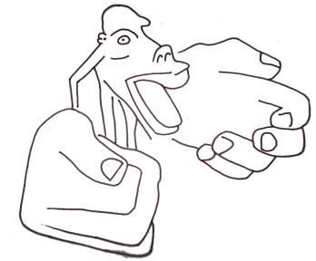

Unlike apes, a large part of the human brain is dedicated to controlling the mouth and hands. If the sizes of our body parts reflected the corresponding amounts of brain tissue, we would look like the picture below.
বনমানুষের বিপরীতে, মানুষের মস্তিষ্কের একটি বড় অংশ মুখ ও হাত নিয়ন্ত্রণের জন্য নিবেদিত। যদি আমাদের শরীরের অঙ্গগুলির আকারগুলি মস্তিষ্কের টিস্যুর অনুরূপ পরিমাণকে প্রতিফলিত করে তবে আমরা নীচের ছবির মতো দেখতে পাব।
FIGURE 45.2: Human in Nerve Ratio

চিত্র 45_2 / Figure 45_2
চিত্র 45.2: স্নায়ু অনুপাতে মানুষ
চিত্র 45_2 / Figure 45_2
The missing links in the aforementioned aspects show that a human being is a standalone creature.
উল্লিখিত দিকগুলির অনুপস্থিত লিঙ্কগুলি দেখায় যে একজন মানুষ একটি স্বতন্ত্র প্রাণী।
And in the alternation of night and day, and the fact that God sends down sustenance from the sky and revives therewith the earth after its death, and in the change of the winds are signs for those that are wise.
এবং রাত্রি ও দিনের পরিবর্তনে এবং এই সত্য যে, আল্লাহ আকাশ থেকে রিযিক নাযিল করেন এবং তা দিয়ে পৃথিবীকে তার মৃত্যুর পর পুনরুজ্জীবিত করেন এবং বাতাসের পরিবর্তনে জ্ঞানীদের জন্য নিদর্শন রয়েছে।
The above verses acquaint Allah by four signs: Rotation of the Earth, which is said as, ―alternation of Night and Day‖ Rain Growth of Plants Change of Winds All of the above happen naturally, but the verses describe them as signs of Allah. Actually, many of the natural laws are acts of Allah. Allah knew that, in time, we would come to understand gravity, so the acts of gravity are extensively referred to in the Quran as the acts of Allah:
উপরের আয়াতগুলো চারটি নিদর্শন দ্বারা আল্লাহকে পরিচিত করে: পৃথিবীর আবর্তন, যাকে বলা হয়, "রাত্রি ও দিনের পরিবর্তন" বৃষ্টি উদ্ভিদের বৃদ্ধি বাতাসের পরিবর্তন উপরের সবগুলোই স্বাভাবিকভাবে ঘটে, কিন্তু আয়াতগুলো সেগুলোকে আল্লাহর নিদর্শন হিসেবে বর্ণনা করে। প্রকৃতপক্ষে, অনেক প্রাকৃতিক নিয়ম আল্লাহর কাজ। আল্লাহ জানতেন যে, সময়ের সাথে সাথে, আমরা মাধ্যাকর্ষণকে বুঝতে পারব, তাই মাধ্যাকর্ষণ ক্রিয়াগুলিকে কুরআনে ব্যাপকভাবে আল্লাহর কাজ হিসাবে উল্লেখ করা হয়েছে:
―Do they not look at the birds held poised in the midst of the sky? Nothing holds them but Allah; verily in this are signs for those who believe‖ [Al Quran 16:79]
-তারা কি আকাশের মাঝখানে বসে থাকা পাখিদের দিকে তাকায় না? আল্লাহ ছাড়া আর কিছুই তাদের ধারণ করে না। নিঃসন্দেহে এতে ঈমানদারদের জন্য নিদর্শন রয়েছে।” [আল কুরআন 16:79]
―Do they not observe the birds above them, spreading and folding? None holds them except Most Gracious: Truly it is He that watches over all things.‖ [Al Quran 67:19]
- তারা কি তাদের উপরে ছড়িয়ে থাকা এবং ভাঁজ করা পাখিদের লক্ষ্য করে না? পরম করুণাময় ব্যতীত কেউ তাদের ধারণ করে না: তিনিই সবকিছুর উপর নজরদারি করেন।'' [আল কুরআন 67:19]
―He covers the night with the day seeking it rapidly, and the sun and the moon and the stars controlled by His deed‖ [Al Quran 7:54] ―It is He Who gives life and death, and to Him is the alternation of night and day (rotation of the earth); will ye not then understand?‖ [Al Quran 23:80]
"তিনি রাত্রিকে ঢেকে দেন দিনের সাথে দ্রুততার সাথে এবং সূর্য ও চন্দ্র ও নক্ষত্রকে তার কর্ম দ্বারা নিয়ন্ত্রিত" [আল কুরআন 7:54] "তিনিই জীবন ও মৃত্যু দান করেন এবং তাঁরই কাছে রাত ও দিনের পরিবর্তন (পৃথিবীর আবর্তন); তবুও কি তোমরা বুঝবে না?'' [আল কুরআন 23:80]
―It is God Who alternates the night and the day (rotates the earth); verily in these things is an instructive example for those who have vision!‖ [Al Quran 24:44]
- আল্লাহই রাত্রি ও দিনের পরিবর্তন করেন (পৃথিবীকে আবর্তন করেন); নিঃসন্দেহে এই জিনিসগুলোর মধ্যে রয়েছে দৃষ্টিশক্তিসম্পন্নদের জন্য একটি শিক্ষণীয় উদাহরণ!'' [আল কুরআন 24:44]
So, the gravitational force is a force of Allah. He holds the birds by gravitational force so that they do not become weightless and off-balanced while flying. He moves the stars and the planets. A force field (gravitational force) in a living being (Allah) should be considered as a soul. A force field and an elementary soul (ruh) are essentially the same thing. Therefore, the gravitational force field can be understood as an elementary soul (ruh) of Allah. A combination of two or more elementary souls, working together to sustain a system, such as an atom, is called a nafs (composite soul). To understand Allah in more detail, we may compare Him to a human. The nafs (composite soul) of a human is a combination of unknown force fields (elementary souls / ruhs) that have not yet been discovered. Similarly, the nafs (composite soul) of Allah is a combination of both known and unknown force fields (elementary souls / ruhs). Allah, in form, resembles a human. He has eyes, ears, a face, hands, legs, etc. His nafs permeates His 'body in form.' 'He in form' resides on the Arsh. He sits on the Kursi (Throne). The Kursi is in the Arsh but extends into the universes as well. The nafs of Allah is immensely powerful, yet it can remain within His 'body in form', because the force field is not dependent on space. According to the Quran, the universes are created from a vast composite soul (nafs) known as Nafsin- Wahidatin (a nafs single). Allah provided (breathed out) the Nafsin-Wahidatin from His own nafs, permeating His 'body in form.' From a scientific perspective, the Nafsin- Wahidatin can be described as GUT Force+ (Grand Unified Theory Force+). As a result, our imaginations remain confined to the products of the Nafsin-Wahidatin, such as forces, energies, and matter. Therefore, it is impossible to imagine what might exist within His body in form? Allah has extended several force fields (elementary souls / ruhs) of His nafs beyond His 'body in form‘. The extended force fields in combination make the 'hands of His nafs'. Each of the hands comprises more than a dozen force fields, extended from His nafs, permeating His body in form. So, His 'body in form' has 'hands in form' as well as 'hands of nafs'. He has extended the 'right hand of His nafs' into this universe. The whole universe is in the palm of this hand. He has extended the 'left of His nafs' into the Arsh. He has infused the 'hands of nafs' to sustain and evolve the creations. The force fields (elementary souls / ruhs) of these hands are designed to act in fixed patterns. Thus, we perceive their effects and actions as fixed natural laws, such as the laws of gravity. Allah has extended several force fields of His nafs through His 'face in form'. These force fields manifest as His 'face of nafs'. He sees and hears everything.
সুতরাং, মহাকর্ষ শক্তি আল্লাহর একটি শক্তি। তিনি মাধ্যাকর্ষণ শক্তি দ্বারা পাখিদের ধরে রাখেন যাতে তারা উড়ে যাওয়ার সময় ওজনহীন এবং ভারসাম্যহীন হয়ে না পড়ে। তিনি নক্ষত্র এবং গ্রহগুলিকে সরান। একটি জীবের (আল্লাহ) মধ্যে একটি বল ক্ষেত্র (মাধ্যাকর্ষণ শক্তি) একটি আত্মা হিসাবে বিবেচনা করা উচিত। একটি শক্তি ক্ষেত্র এবং একটি প্রাথমিক আত্মা (রুহ) মূলত একই জিনিস। অতএব, মহাকর্ষীয় বল ক্ষেত্রটিকে আল্লাহর একটি প্রাথমিক আত্মা (রুহ) হিসাবে বোঝা যায়। দুটি বা ততোধিক প্রাথমিক আত্মার সংমিশ্রণ, একটি সিস্টেমকে টিকিয়ে রাখার জন্য একসাথে কাজ করে, যেমন একটি পরমাণু, তাকে বলা হয় নফস (যৌগিক আত্মা)। আল্লাহকে আরও বিশদভাবে বোঝার জন্য, আমরা তাকে একজন মানুষের সাথে তুলনা করতে পারি। একজন মানুষের নফস (যৌগিক আত্মা) হল অজানা শক্তি ক্ষেত্রগুলির (প্রাথমিক আত্মা/রুহ) সংমিশ্রণ যা এখনও আবিষ্কৃত হয়নি। একইভাবে, আল্লাহর নফস (যৌগিক আত্মা) জ্ঞাত ও অজানা উভয় শক্তির ক্ষেত্র (প্রাথমিক আত্মা/রুহ) এর সমন্বয়। আল্লাহ আকৃতিতে মানুষের মতন। তার চোখ, কান, মুখ, হাত, পা ইত্যাদি রয়েছে। তার নফস তার 'দেহের আকারে' বিস্তৃত। 'তিনি ফর্মে' থাকেন আরশে। তিনি কুরসিতে (সিংহাসনে) বসে আছেন। কুরসি আরশে আছে কিন্তু মহাবিশ্বেও বিস্তৃত। আল্লাহর নফস অত্যন্ত শক্তিশালী, তবুও তা তাঁর 'শরীরে' রয়ে যেতে পারে, কারণ বল ক্ষেত্র স্থানের উপর নির্ভরশীল নয়। কুরআন অনুসারে, মহাবিশ্বগুলি একটি বিশাল যৌগিক আত্মা (নফস) থেকে সৃষ্টি হয়েছে যা নাফসিন-ওয়াহিদাতিন (একটি নফস একক) নামে পরিচিত। আল্লাহ তাঁর নিজের নফস থেকে নফসিন-ওয়াহিদাতিন প্রদান করেন, তাঁর 'আকৃতিতে শরীর' প্রবাহিত করেন। বৈজ্ঞানিক দৃষ্টিকোণ থেকে, নাফসিন-ওয়াহিদাতিনকে GUT ফোর্স+ (গ্র্যান্ড ইউনিফাইড থিওরি ফোর্স+) হিসাবে বর্ণনা করা যেতে পারে। ফলস্বরূপ, আমাদের কল্পনা শক্তি, শক্তি এবং পদার্থের মতো নফসিন-ওয়াহিদাতিনের পণ্যগুলিতে সীমাবদ্ধ থাকে। অতএব, এটা কল্পনা করা অসম্ভব যে কি আকারে তার শরীরের মধ্যে বিদ্যমান থাকতে পারে? আল্লাহ তাঁর নফসের বেশ কিছু শক্তির ক্ষেত্র (প্রাথমিক আত্মা/রুহ) তাঁর 'দেহের আকার'-এর বাইরে প্রসারিত করেছেন। সম্মিলিতভাবে প্রসারিত বল ক্ষেত্রগুলি 'তাঁর নফসের হাত' তৈরি করে। প্রতিটি হাত এক ডজনেরও বেশি বল ক্ষেত্র নিয়ে গঠিত, যা তাঁর নফস থেকে প্রসারিত, আকারে তাঁর শরীরে বিস্তৃত। সুতরাং, তার 'আকৃতির শরীর' যেমন 'আকৃতিতে হাত' তেমনি 'নফসের হাত'ও রয়েছে। তিনি তাঁর নফসের ডান হাত এই মহাবিশ্বে প্রসারিত করেছেন। সমগ্র মহাবিশ্ব এই হাতের তালুতে। তিনি তাঁর নফসের বামকে আরশে প্রসারিত করেছেন। তিনি সৃষ্টিকে টিকিয়ে রাখতে ও বিকশিত করার জন্য 'নফসের হাত' যোগ করেছেন। এই হাতগুলির বল ক্ষেত্রগুলি (প্রাথমিক আত্মা/রুহ) নির্দিষ্ট প্যাটার্নে কাজ করার জন্য ডিজাইন করা হয়েছে। এইভাবে, আমরা তাদের প্রভাব এবং ক্রিয়াগুলিকে স্থির প্রাকৃতিক নিয়ম হিসাবে উপলব্ধি করি, যেমন মাধ্যাকর্ষণ আইন। আল্লাহ তাঁর 'আকারে মুখের' মাধ্যমে তাঁর নফসের বেশ কিছু শক্তির ক্ষেত্র প্রসারিত করেছেন। এই শক্তির ক্ষেত্রগুলি তাঁর 'নফসের মুখ' হিসাবে প্রকাশ পায়। তিনি সবকিছু দেখেন এবং শোনেন।
―And for God the East and the West, so wherever you turn, there is the Face of God; indeed Allah is All-Encompassing, All-Knowing.‖ [Al Quran 2:115]
এবং পূর্ব ও পশ্চিম ঈশ্বরের জন্য, সুতরাং আপনি যেদিকেই ফিরবেন, সেখানেই ঈশ্বরের মুখ আছে; নিঃসন্দেহে আল্লাহ সর্বব্যাপী, সর্বজ্ঞ।'' [আল কুরআন 2:115]
―That is because God merges night into day and He merges day into night (rotates the earth), and verily it is God Who hears and sees.‖ [Al Quran 22:61]
"এটা এজন্য যে, আল্লাহ রাত্রিকে দিনে এবং তিনি দিনকে রাত্রিতে মিশে যান (পৃথিবীকে ঘোরান) এবং নিশ্চয়ই আল্লাহ শোনেন এবং দেখেন।" [আল কুরআন 22:61]
A few more forces, comprising His hands of nafs, are discussed below: According to the Quran, Allah is the light of the Skies and Lands (universe). This light, permeating the entire universe, is held in one or more of the forces of His hands (hands of nafs). Alternatively, the light itself may be a force of His hands. His light is not exposed in our dimension. It is likely that we perceive this light as Vacuum Energy. The Dark Energy that expands the universe may be a force of the hand of His nafs. The Quantum Fields, permeating the universe and sustaining the fundamental subatomic particles, are forces of His hands of nafs. The CERN Hadron Collider has discovered a field that covers the entire universe. The collider crashes protons at nearly the speed of light to create tiny particles. It has identified a fundamental particle called the Higgs Boson. These particles are like ripples on a lake. Although the ripples are short-lived, they reveal the existence of the lake, even when it appears still. The lake can be compared to a field. It is an invisible energy field that exists everywhere in the universe. As particles pass through the field, they are endowed with the property of mass. The particle does not absorb anything from the field; rather, the mass is imparted as the particle moves through it. Thus, the creations remain separate. The basic creations are atoms and nafses of living creatures. The creations are derived from the Nafsin- Wahidatin, and the fields are comprised of the forces of His hands (hands of nafs). Thus, the creations remain separate.
তাঁর হাতের নফস নিয়ে গঠিত আরও কয়েকটি শক্তি নীচে আলোচনা করা হয়েছে: কুরআন অনুসারে, আল্লাহ হলেন আকাশ ও জমিনের (মহাবিশ্বের) আলো। এই আলো, সমগ্র মহাবিশ্বে বিস্তৃত, তাঁর হাতের এক বা একাধিক শক্তিতে (নফসের হাত) ধারণ করে। বিকল্পভাবে, আলো নিজেই তাঁর হাতের শক্তি হতে পারে। তার আলো আমাদের মাত্রায় উদ্ভাসিত হয় না। সম্ভবত আমরা এই আলোকে ভ্যাকুয়াম শক্তি হিসাবে উপলব্ধি করি। ডার্ক এনার্জি যা মহাবিশ্বকে প্রসারিত করে তা হতে পারে তাঁর নফসের হাতের শক্তি। কোয়ান্টাম ক্ষেত্রগুলি, মহাবিশ্বে বিস্তৃত এবং মৌলিক উপ-পরমাণু কণাগুলিকে টিকিয়ে রাখে, নফসের তাঁর হাতের শক্তি। CERN Hadron Collider এমন একটি ক্ষেত্র আবিষ্কার করেছে যা সমগ্র মহাবিশ্বকে কভার করে। কোলাইডার ক্ষুদ্র কণা তৈরি করতে প্রায় আলোর গতিতে প্রোটনকে বিধ্বস্ত করে। এটি হিগস বোসন নামে একটি মৌলিক কণা চিহ্নিত করেছে। এই কণাগুলি হ্রদের তরঙ্গের মতো। যদিও তরঙ্গগুলি স্বল্পস্থায়ী, তবুও তারা হ্রদের অস্তিত্ব প্রকাশ করে, এমনকি যখন এটি এখনও দেখা যায়। হ্রদকে একটি মাঠের সাথে তুলনা করা যেতে পারে। এটি একটি অদৃশ্য শক্তি ক্ষেত্র যা মহাবিশ্বের সর্বত্র বিদ্যমান। কণাগুলি ক্ষেত্রের মধ্য দিয়ে যাওয়ার সময়, তারা ভরের সম্পত্তি দ্বারা সমৃদ্ধ হয়। কণা ক্ষেত্র থেকে কিছু শোষণ করে না; বরং, কণার মধ্য দিয়ে যাওয়ার সাথে সাথে ভর দেওয়া হয়। এভাবে সৃষ্টিগুলো আলাদা থাকে। মৌলিক সৃষ্টি জীবের পরমাণু ও নফসেস। সৃষ্টিগুলি নফসিন-ওয়াহিদাতিন থেকে উদ্ভূত হয়েছে এবং ক্ষেত্রগুলি তাঁর হাতের শক্তি (নফসের হাত) দ্বারা গঠিত। এভাবে সৃষ্টিগুলো আলাদা থাকে।
FIGURE 45.3: CERN Hadron Collider
চিত্র 45_3 / Figure 45_3
চিত্র 45.3: CERN হ্যাড্রন কোলাইডার
চিত্র 45_3 / Figure 45_3
The subatomic particles, atoms, and larger objects are designed to follow specific laws. They were created on the Day of Law and set on fixed paths and timelines to reach their goals. None can deviate from this design. Thus, He is the Creator, Designer, Sustainer, and Evolver of the universes. The nature we see around us, such as the rotation of the Earth, the rain, the growth of plants, and the changing of winds, is inspired by this design, sustained by Him. He is the Time itself:
উপপারমাণবিক কণা, পরমাণু এবং বৃহত্তর বস্তু নির্দিষ্ট আইন অনুসরণ করার জন্য ডিজাইন করা হয়েছে। তারা আইনের দিনে তৈরি করা হয়েছিল এবং তাদের লক্ষ্যে পৌঁছানোর জন্য নির্দিষ্ট পথ এবং সময়সীমার উপর সেট করা হয়েছিল। কেউ এই নকশা থেকে বিচ্যুত করতে পারবেন না. সুতরাং, তিনি মহাবিশ্বের স্রষ্টা, ডিজাইনার, ধারক এবং বিবর্তনকারী। আমরা আমাদের চারপাশে যে প্রকৃতি দেখতে পাই, যেমন পৃথিবীর ঘূর্ণন, বৃষ্টি, গাছপালা বৃদ্ধি এবং বাতাসের পরিবর্তন, এই নকশা দ্বারা অনুপ্রাণিত, তাঁর দ্বারা টিকিয়ে রাখা। তিনি নিজেই সময়:
―On the authority of Abu Hurayrah, who said that the Messenger of Allah said, Allah says, ―Children of Adam inveigh against Time; I am Time; I change the day and night‖ [Hadith-e-Qudsi, Bukhari, Muslim]
আবু হুরায়রা (রাঃ) থেকে বর্ণিত, তিনি বলেন, রাসূলুল্লাহ (সাঃ) বলেছেন, আল্লাহ বলেন, ‘আদম সন্তান সময়ের বিরুদ্ধে অপবাদ দেয়; আমি সময়; আমি দিনরাত পরিবর্তন করি” [হাদিস-ই-কুদসি, বুখারি, মুসলিম]
Allah monitors the living creatures through angels, governed by a cybernetic system. The system guides them according to their predetermined fates. This system is deliberately discussed in Section-9 of Chapter-6.
আল্লাহ একটি সাইবারনেটিক সিস্টেম দ্বারা নিয়ন্ত্রিত ফেরেশতাদের মাধ্যমে জীবন্ত প্রাণীদের পর্যবেক্ষণ করেন। সিস্টেম তাদের পূর্বনির্ধারিত ভাগ্য অনুযায়ী পরিচালিত করে। এই ব্যবস্থাটি ইচ্ছাকৃতভাবে অধ্যায়-6 এর ধারা-9 এ আলোচনা করা হয়েছে।
Such are the signs of God, which We rehearse to thee in truth; then in what exposition will they believe after God and His signs? Woe to each sinful dealer in falsehoods; he hears the verses of God rehearsed to him, yet is obstinate and lofty, as if he had not heard them—then announce to him a penalty grievous! And when he learns something of Our signs, he takes them in jest; for such there will be a humiliating penalty. In front of them is hell, and of no profit to them is anything they may have earned, nor any protectors they may have taken to themselves besides God; for them is a tremendous penalty. This is guidance, and for those who reject the signs of their Lord is a grievous penalty of abomination.
এগুলি হল আল্লাহর নিদর্শন, যা আমরা সত্যে আপনার কাছে শুনাচ্ছি। তাহলে ঈশ্বর ও তাঁর নিদর্শনাবলীর পর তারা কোন বর্ণনায় বিশ্বাস করবে? মিথ্যার প্রতিটি পাপী ব্যবসায়ীর জন্য ধিক্; সে ঈশ্বরের আয়াতগুলি তার কাছে পাঠ করে শোনে, তবুও সে অনড় এবং উচ্চ, যেন সে সেগুলি শোনেইনি-তাহলে তাকে একটি কঠিন শাস্তি ঘোষণা করুন! অতঃপর যখন সে আমার নিদর্শনাবলীর কিছু জানতে পারে, তখন সে তা ঠাট্টা করে নেয়। এই ধরনের জন্য একটি অপমানজনক শাস্তি হবে. তাদের সামনে রয়েছে জাহান্নাম, এবং তাদের কোন লাভ নেই যা তারা উপার্জন করেছে এবং আল্লাহকে বাদ দিয়ে তারা কোন অভিভাবক গ্রহণ করেছে। তাদের জন্য রয়েছে এক বিরাট শাস্তি। এটা হেদায়েত এবং যারা তাদের পালনকর্তার নিদর্শন অস্বীকার করে তাদের জন্য রয়েছে জঘন্য শাস্তি।
It is God Who has subjected the sea to you that ships may sail through it by His command that ye may seek of His bounty and that ye may be grateful. And He has subjected to you as from Him all that is in the Skies and Lands. Behold, in that are signs indeed for those who reflect. Tell those who believe to forgive those who do not look forward to the days of God. It is for Him to recompense each people according to what they have earned. Whoever does a good deed, it is for himself; and whoever does evil, it is against the self. Then to your Lord you will be returned.
তিনিই আল্লাহ যিনি সাগরকে তোমাদের অধীন করে দিয়েছেন যাতে তাঁর নির্দেশে তাতে জাহাজ চলাচল করতে পারে যাতে তোমরা তাঁর অনুগ্রহ অন্বেষণ করতে পার এবং যাতে তোমরা কৃতজ্ঞ হও। আর তিনি তোমাদের অধীন করে দিয়েছেন আকাশ ও যমীনে যা কিছু আছে সবই তাঁর কাছ থেকে। যারা চিন্তা করে তাদের জন্য এতে নিদর্শন রয়েছে। যারা বিশ্বাসী তাদেরকে ক্ষমা করতে বলুন যারা আল্লাহর দিনের অপেক্ষায় থাকে না। প্রত্যেক জাতিকে তারা যা অর্জন করেছে তার প্রতিদান দেওয়া তাঁরই। যে একটি ভাল কাজ করে, সে তার নিজের জন্য; আর যে মন্দ কাজ করে, সে তার নিজের বিরুদ্ধে। অতঃপর তোমাদের প্রভুর কাছে প্রত্যাবর্তন করা হবে।
Everything in this universe is subject to humans, as the verses say: And He has subjected to you as from Him all that is in the Skies and Lands (universe). Therefore, one may do whatever one desires— enjoying freedom. The universe (Samawaat) has already been given. But Jannaat has not yet been given. It will be granted to those whom Allah favors. Thus, the verses say: Tell those who believe to forgive those who do not look forward to the days of God. Section 4 of Chapter 45 [Verse16-22]: People above the Nations
এই মহাবিশ্বের সবকিছুই মানুষের অধীন, যেমন আয়াতে বলা হয়েছে: এবং তিনি আকাশ ও ভূমিতে (মহাবিশ্ব) যা আছে সবই তাঁর কাছ থেকে তোমাদের অধীন করেছেন। অতএব, কেউ যা ইচ্ছা তাই করতে পারে- স্বাধীনতা উপভোগ করে। মহাবিশ্ব (সামাওয়াত) আগেই দেওয়া হয়েছে। কিন্তু জান্নাত এখনো দেওয়া হয়নি। এটা তাদেরই দেওয়া হবে যাদেরকে আল্লাহ অনুগ্রহ করেন। সুতরাং, আয়াতগুলি বলে: যারা বিশ্বাসী তাদের বলুন তাদের ক্ষমা করতে যারা আল্লাহর দিনগুলির জন্য অপেক্ষা করে না। অধ্যায় 45 এর অধ্যায় 4 [Verse16-22]: জাতির উপরে মানুষ
We did aforetime grant to the Children of Israel the book, the power of command, and prophet-hood. We gave them for sustenance things good and pure, and We favored them above the nations. And We granted them clear proof of the matters; it was only after knowledge had been granted to them that they fell into schisms through insolent envy among themselves. Verily, thy Lord will judge between them on the Day of Judgment as to those matters in which they set up differences. Then We put thee on the way of religion, so follow thou that. And follow not the desires of those who know not; they will be of no use to thee in the sight of God. It is only wrongdoers, protectors one to another, but God is the Protector of the Guards. These are clear evidences to men, and a guidance and mercy to those of assured Faith. What! Do those who seek after evil ways think that We shall hold them equal with those who believe and do righteous deeds; that equal will be their life and their death? Ill is the judgment that they make. God created the Skies and Lands for just ends, and in order that each soul may find the recompense of what it has earned and none of them be wronged.
আমরা ইতিপূর্বে বনী ইসরাঈলকে কিতাব, আদেশের ক্ষমতা এবং নবুওয়াত দিয়েছিলাম। আমি তাদেরকে উত্তম ও বিশুদ্ধ রিযিক দান করেছি এবং তাদেরকে জাতিসমূহের উপরে শ্রেষ্ঠত্ব দান করেছি। আর আমি তাদেরকে বিষয়ের সুস্পষ্ট প্রমাণ দিয়েছিলাম। জ্ঞান দান করার পরই তারা নিজেদের মধ্যে ঔদ্ধত্যপূর্ণ হিংসা-বিদ্বেষে বিভেদে পড়ে। নিঃসন্দেহে আপনার পালনকর্তা তাদের মধ্যে বিচারের দিন ফয়সালা করবেন যে বিষয়ে তারা মতবিরোধ করে। অতঃপর আমি তোমাকে দ্বীনের পথে নিযুক্ত করি, সুতরাং তুমি তার অনুসরণ কর। আর যারা জানে না তাদের প্রবৃত্তির অনুসরণ করো না। ঈশ্বরের সামনে এগুলো তোমার কোন কাজে আসবে না। এটা শুধু অন্যায়কারী, একে অপরের রক্ষাকারী, কিন্তু আল্লাহ পাহারাদারদের রক্ষাকারী। এগুলো মানুষের জন্য সুস্পষ্ট প্রমাণ এবং নিশ্চিত বিশ্বাসীদের জন্য পথনির্দেশ ও করুণা। কি! যারা মন্দ পথ অন্বেষণ করে তারা কি মনে করে যে, যারা ঈমান এনেছে ও সৎকাজ করেছে, আমি তাদের সমান করব? যে তাদের জীবন ও মৃত্যু সমান হবে? তারা যে রায় দেয় তা খারাপ। আল্লাহ আকাশ ও ভূমি সৃষ্টি করেছেন ন্যায়পরায়ণতার জন্য, এবং যাতে প্রত্যেক ব্যক্তি তার উপার্জনের প্রতিদান পায় এবং তাদের কারো প্রতি অন্যায় না হয়।